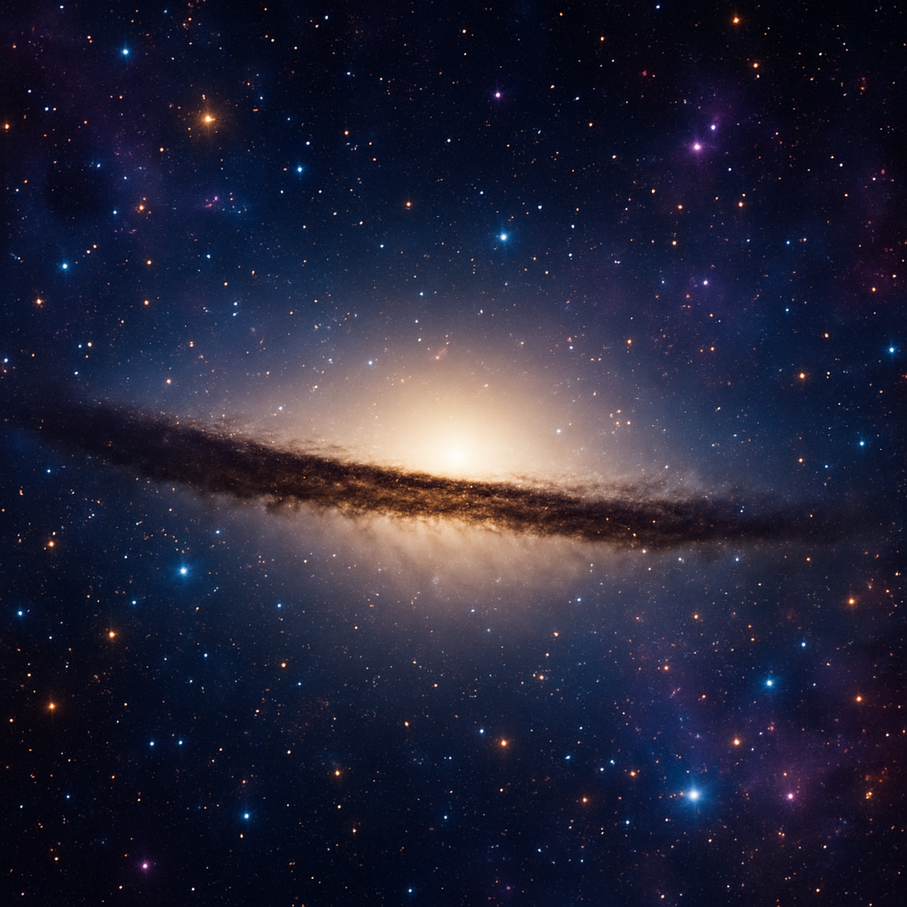

Nossa jornada pelo cosmos digital nos leva hoje a uma descoberta incrivel! Com as ferramentas do HTML5, podemos mapear e documentar as maravilhas do universo como nunca antes. Preparem-se para decolar!

A Missão Semântica I atingiu seu objetivo principal.
Relatório da Missão: Todos os dados coletados com secesso! Encontramos vestígios de H2O emum exoplaneta distante, e a temperatura média registrada na sua face escura foi de -150°C. A estimativa inicial de estrelas na Nebulosa Nebulosa Nebulae X era de 10 trilhões 12.5 trilhoes!
Um famoso astrônomo uma vez refletiu:Log de Bordo - Entrada Estelar 42.7:O universo não é apenas mais estranho do que imaginamos, é mais estranho do que podemos imaginar.Esta jornada com HTML nos permite, ao menos, tentar catalogar essa estranheza maravilhosa.
STATUS_SISTEMA: ONLINE
NAVEGACAO_ESTELAR: ATIVA - RUMO AO QUADRANTE ZETA-9
NIVEL_COMBUSTIVEL: 75%
ULTIMA_TRANSMISSAO: Alerta: Detectada anomalia gravitacional. Possível emissão de <energia desconhecida>.
// Nota para a tripulação: Usamos < e > para exibir as tags no log!